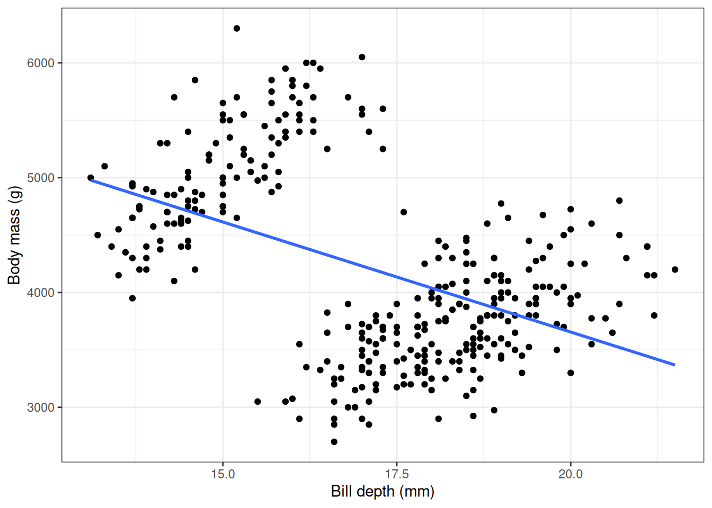
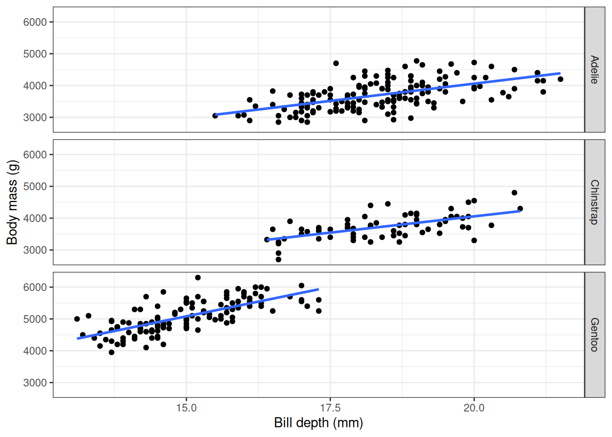

library(dplyr)
library(dbplyr)
library(ggplot2)
library(DBI)
library(duckdb)
library(palmerpenguins)1 A first analysis using data in a database

Artwork by @allison_horst
Before we start working with healthcare data spread across a database using the OMOP Common Data Model, let’s first do a simpler analysis. In this case, we will do a quick data analysis with R using a simple dataset held in a database to understand the general approach. For this we’ll use data from the palmerpenguins package, which contains data on penguins collected from the Palmer Station in Antarctica.
1.1 Getting set up
1.2 Taking a peek at the data
The package palmerpenguins contains two datasets, one of them called penguins, which we will use in this chapter. We can get an overview of the data using the glimpse() command.
glimpse(penguins)Rows: 344
Columns: 8
$ species <fct> Adelie, Adelie, Adelie, Adelie, Adelie, Adelie, Adel…
$ island <fct> Torgersen, Torgersen, Torgersen, Torgersen, Torgerse…
$ bill_length_mm <dbl> 39.1, 39.5, 40.3, NA, 36.7, 39.3, 38.9, 39.2, 34.1, …
$ bill_depth_mm <dbl> 18.7, 17.4, 18.0, NA, 19.3, 20.6, 17.8, 19.6, 18.1, …
$ flipper_length_mm <int> 181, 186, 195, NA, 193, 190, 181, 195, 193, 190, 186…
$ body_mass_g <int> 3750, 3800, 3250, NA, 3450, 3650, 3625, 4675, 3475, …
$ sex <fct> male, female, female, NA, female, male, female, male…
$ year <int> 2007, 2007, 2007, 2007, 2007, 2007, 2007, 2007, 2007…Or we could take a look at the first rows of the data using head():
head(penguins, 5)# A tibble: 5 × 8
species island bill_length_mm bill_depth_mm flipper_length_mm body_mass_g
<fct> <fct> <dbl> <dbl> <int> <int>
1 Adelie Torgersen 39.1 18.7 181 3750
2 Adelie Torgersen 39.5 17.4 186 3800
3 Adelie Torgersen 40.3 18 195 3250
4 Adelie Torgersen NA NA NA NA
5 Adelie Torgersen 36.7 19.3 193 3450
# ℹ 2 more variables: sex <fct>, year <int>1.3 Inserting data into a database
By default, the data provided by the package is local (stored in memory on your computer), so let’s first put it into a DuckDB database. We need to first create the database.
con <- dbConnect(drv = duckdb())See that now we have created an empty DuckDB database. We can easily add the penguins data to it.
dbWriteTable(conn = con, name = "penguins", value = penguins)With the function dbListTables() we can list the tables of a database. In our case, we can see it now has one table:
dbListTables(conn = con)[1] "penguins"And now that the data is in a database we could use SQL directly to get the first rows that we saw before.
dbGetQuery(conn = con, statement = "SELECT * FROM penguins LIMIT 5") species island bill_length_mm bill_depth_mm flipper_length_mm body_mass_g
1 Adelie Torgersen 39.1 18.7 181 3750
2 Adelie Torgersen 39.5 17.4 186 3800
3 Adelie Torgersen 40.3 18.0 195 3250
4 Adelie Torgersen NA NA NA NA
5 Adelie Torgersen 36.7 19.3 193 3450
sex year
1 male 2007
2 female 2007
3 female 2007
4 <NA> 2007
5 female 2007As you can see we have the same data that we had locally but now it’s located inside the DuckDB database we created.
TipConnecting to databases from R
Database connections from R can be made using the DBI package where the back-end for DBI is facilitated by database-specific driver packages (such as RPostgres for Postgres and Amazon Redshift, and bigrquery for Google BigQuery), or the odbc R package can be used with ODBC drivers. Or instead of using ODBC drivers, JDBC drivers can be used via the DatabaseConnector R package.
In the code snippets above, we created a new, empty, in-process DuckDB via database to which we then added our dataset. But we could have instead connected to an existing duckdb database. This could, for example, look like:
con <- dbConnect(drv = duckdb(dbdir = "my_duckdb_database.ducdkb"))Note that if you point to a non-existing DuckDB file, this will be created with an empty database.
In this book, for simplicity, we will mostly be working with in-process DuckDB databases with synthetic data. However, when analysing real patient data we will be more often working with client-server databases, where we are connecting from our computer to a central server with the database or working with data held in the cloud. The approaches shown throughout this book will work in the same way for these other types of database management systems, but the way to connect to the database will be different (although still using DBI). In general, creating connections is supported by associated back-end packages. For example a connection to a Postgres database would use the RPostgres R package and look something like this:
library(DBI)
library(RPostgres)
con <- dbConnect(drv = Postgres(),
dbname = "my_database",
host = "my_server",
user = "user",
password = "password")Or if using the DatabaseConnector R package creating a connection would look something like:
library(DatabaseConnector)
downloadJdbcDrivers("postgresql")
con <- connect(dbms = "postgresql",
connectionString = "jdbc:postgresql://my_server",
user = "user",
password = "password")1.4 Translation from R to SQL
Instead of using SQL to query our database, we might instead want to use the same R code as before. However, instead of working with the local dataset, now we will need it to query the data held in the database. To do this, first we can create a reference to the table in the database as such:
penguins_db <- tbl(src = con, "penguins")
penguins_db# Source: table<penguins> [?? x 8]
# Database: DuckDB 1.4.1 [unknown@Linux 6.11.0-1018-azure:R 4.4.1/:memory:]
species island bill_length_mm bill_depth_mm flipper_length_mm body_mass_g
<fct> <fct> <dbl> <dbl> <int> <int>
1 Adelie Torgersen 39.1 18.7 181 3750
2 Adelie Torgersen 39.5 17.4 186 3800
3 Adelie Torgersen 40.3 18 195 3250
4 Adelie Torgersen NA NA NA NA
5 Adelie Torgersen 36.7 19.3 193 3450
6 Adelie Torgersen 39.3 20.6 190 3650
7 Adelie Torgersen 38.9 17.8 181 3625
8 Adelie Torgersen 39.2 19.6 195 4675
9 Adelie Torgersen 34.1 18.1 193 3475
10 Adelie Torgersen 42 20.2 190 4250
# ℹ more rows
# ℹ 2 more variables: sex <fct>, year <int>Once we have this reference, we can then use it with familiar looking R code.
head(penguins_db, 5)# Source: SQL [?? x 8]
# Database: DuckDB 1.4.1 [unknown@Linux 6.11.0-1018-azure:R 4.4.1/:memory:]
species island bill_length_mm bill_depth_mm flipper_length_mm body_mass_g
<fct> <fct> <dbl> <dbl> <int> <int>
1 Adelie Torgersen 39.1 18.7 181 3750
2 Adelie Torgersen 39.5 17.4 186 3800
3 Adelie Torgersen 40.3 18 195 3250
4 Adelie Torgersen NA NA NA NA
5 Adelie Torgersen 36.7 19.3 193 3450
# ℹ 2 more variables: sex <fct>, year <int>The magic here is provided by the dbplyr package, which takes the R code and converts it into SQL. In this case the query looks like the SQL we wrote directly before.
head(penguins_db, 5) |>
show_query()<SQL>
SELECT penguins.*
FROM penguins
LIMIT 51.5 Example analysis
More complicated SQL can also be generated by using familiar dplyr code. For example, we could get a summary of bill length by species like so:
penguins_db |>
group_by(species) |>
summarise(
n = n(),
min_bill_length_mm = min(bill_length_mm, na.rm = TRUE),
mean_bill_length_mm = mean(bill_length_mm, na.rm = TRUE),
max_bill_length_mm = max(bill_length_mm, na.rm = TRUE)
) |>
mutate(min_max_bill_length_mm = paste0(
min_bill_length_mm, " to ", max_bill_length_mm
)) |>
select("species", "mean_bill_length_mm", "min_max_bill_length_mm")# Source: SQL [?? x 3]
# Database: DuckDB 1.4.1 [unknown@Linux 6.11.0-1018-azure:R 4.4.1/:memory:]
species mean_bill_length_mm min_max_bill_length_mm
<fct> <dbl> <chr>
1 Adelie 38.8 32.1 to 46.0
2 Chinstrap 48.8 40.9 to 58.0
3 Gentoo 47.5 40.9 to 59.6 The benefit of using dbplyr now becomes quite clear if we take a look at the corresponding SQL that is generated for us:
penguins_db |>
group_by(species) |>
summarise(
n = n(),
min_bill_length_mm = min(bill_length_mm, na.rm = TRUE),
mean_bill_length_mm = mean(bill_length_mm, na.rm = TRUE),
max_bill_length_mm = max(bill_length_mm, na.rm = TRUE)
) |>
mutate(min_max_bill_length_mm = paste0(
min_bill_length_mm, " to ", max_bill_length_mm
)) |>
select("species", "mean_bill_length_mm", "min_max_bill_length_mm") |>
show_query()<SQL>
SELECT
species,
mean_bill_length_mm,
CONCAT_WS('', min_bill_length_mm, ' to ', max_bill_length_mm) AS min_max_bill_length_mm
FROM (
SELECT
species,
COUNT(*) AS n,
MIN(bill_length_mm) AS min_bill_length_mm,
AVG(bill_length_mm) AS mean_bill_length_mm,
MAX(bill_length_mm) AS max_bill_length_mm
FROM penguins
GROUP BY species
) q01Instead of having to write this somewhat complex SQL specific to DuckDB, we can use the friendlier dplyr syntax that will be more familiar if you’re coming from an R programming background.
NoteTranslation to different SQL dialects
Note this same R code will also work for other SQL dialects such as Postgres, SQL server, Snowflake and Spark. Here you can see the different generated translations:
<SQL>
SELECT
`species`,
`mean_bill_length_mm`,
CONCAT_WS('', `min_bill_length_mm`, ' to ', `max_bill_length_mm`) AS `min_max_bill_length_mm`
FROM (
SELECT
`species`,
COUNT(*) AS `n`,
MIN(`bill_length_mm`) AS `min_bill_length_mm`,
AVG(`bill_length_mm`) AS `mean_bill_length_mm`,
MAX(`bill_length_mm`) AS `max_bill_length_mm`
FROM `df`
GROUP BY `species`
) AS `q01`<SQL>
SELECT
`species`,
`mean_bill_length_mm`,
`min_bill_length_mm` + ' to ' + `max_bill_length_mm` AS `min_max_bill_length_mm`
FROM (
SELECT
`species`,
COUNT_BIG(*) AS `n`,
MIN(`bill_length_mm`) AS `min_bill_length_mm`,
AVG(`bill_length_mm`) AS `mean_bill_length_mm`,
MAX(`bill_length_mm`) AS `max_bill_length_mm`
FROM `df`
GROUP BY `species`
) AS `q01`<SQL>
SELECT
`species`,
`mean_bill_length_mm`,
`min_bill_length_mm` || ' to ' || `max_bill_length_mm` AS `min_max_bill_length_mm`
FROM (
SELECT
`species`,
COUNT(*) AS `n`,
MIN(`bill_length_mm`) AS `min_bill_length_mm`,
AVG(`bill_length_mm`) AS `mean_bill_length_mm`,
MAX(`bill_length_mm`) AS `max_bill_length_mm`
FROM `df`
GROUP BY `species`
) AS `q01`<SQL>
SELECT
`species`,
`mean_bill_length_mm`,
ARRAY_TO_STRING(ARRAY_CONSTRUCT_COMPACT(`min_bill_length_mm`, ' to ', `max_bill_length_mm`), '') AS `min_max_bill_length_mm`
FROM (
SELECT
`species`,
COUNT(*) AS `n`,
MIN(`bill_length_mm`) AS `min_bill_length_mm`,
AVG(`bill_length_mm`) AS `mean_bill_length_mm`,
MAX(`bill_length_mm`) AS `max_bill_length_mm`
FROM `df`
GROUP BY `species`
) AS `q01`<SQL>
SELECT
`species`,
`mean_bill_length_mm`,
CONCAT_WS('', `min_bill_length_mm`, ' to ', `max_bill_length_mm`) AS `min_max_bill_length_mm`
FROM (
SELECT
`species`,
COUNT(*) AS `n`,
MIN(`bill_length_mm`) AS `min_bill_length_mm`,
AVG(`bill_length_mm`) AS `mean_bill_length_mm`,
MAX(`bill_length_mm`) AS `max_bill_length_mm`
FROM `df`
GROUP BY `species`
) AS `q01`Note that even though the different SQL statements look similar, each SQL dialect has its own particularities. Using the dbplyr approach allows us to support multiple different SQL dialects and back-ends by just writing R code.
Not having to worry about the SQL translation behind our queries allows us to query the database in a simple way even for more complex questions. For instance, suppose now that we are particularly interested in the body mass variable. We can first notice that there are a couple of missing records for this.
penguins_db |>
mutate(missing_body_mass_g = if_else(is.na(body_mass_g), 1, 0)) |>
group_by(species, missing_body_mass_g) |>
tally()# Source: SQL [?? x 3]
# Database: DuckDB 1.4.1 [unknown@Linux 6.11.0-1018-azure:R 4.4.1/:memory:]
species missing_body_mass_g n
<fct> <dbl> <dbl>
1 Adelie 0 151
2 Gentoo 0 123
3 Adelie 1 1
4 Gentoo 1 1
5 Chinstrap 0 68We can get the mean for each of the species, first dropping those two missing records:
penguins_db |>
group_by(species) |>
summarise(mean_body_mass_g = round(mean(body_mass_g, na.rm = TRUE)))# Source: SQL [?? x 2]
# Database: DuckDB 1.4.1 [unknown@Linux 6.11.0-1018-azure:R 4.4.1/:memory:]
species mean_body_mass_g
<fct> <dbl>
1 Adelie 3701
2 Chinstrap 3733
3 Gentoo 5076We could also make a histogram of values for each of the species using the ggplot2 package. Here we would bring our data back into R before creating our plot with the collect() function.
penguins_db |>
select("species", "body_mass_g") |>
collect() |>
ggplot(aes(group = species, fill = species)) +
facet_grid(species ~ .) +
geom_histogram(aes(body_mass_g), colour = "black", binwidth = 100) +
xlab("Body mass (g)") +
theme_bw() +
theme(legend.position = "none")
Now let’s look at the relationship between body mass and bill depth.
penguins_db |>
select("species", "body_mass_g", "bill_depth_mm") |>
collect() |>
ggplot(aes(x = bill_depth_mm, y = body_mass_g)) +
geom_point() +
geom_smooth(method = "lm", se = FALSE) +
xlab("Bill depth (mm)") +
ylab("Body mass (g)") +
theme_bw() +
theme(legend.position = "none")
We see a negative correlation between body mass and bill depth, which seems rather unexpected. But what about if we stratify this query by species?
penguins_db |>
select("species", "body_mass_g", "bill_depth_mm") |>
collect() |>
ggplot(aes(x = bill_depth_mm, y = body_mass_g)) +
facet_grid(species ~ .) +
geom_point() +
geom_smooth(method = "lm", se = FALSE) +
xlab("Bill depth (mm)") +
ylab("Body mass (g)") +
theme_bw() +
theme(legend.position = "none")
As well as having an example of working with data in database from R, you also have an example of Simpson’s paradox!
1.6 Disconnecting from the database
Now that we’ve reached the end of this example, we can close our connection to the database.
dbDisconnect(conn = con)